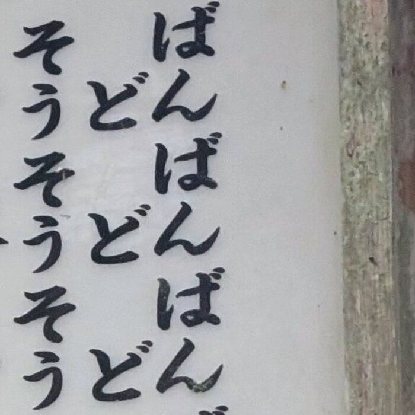
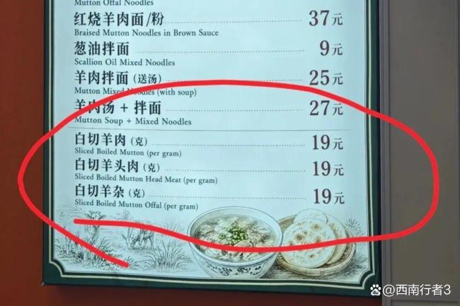
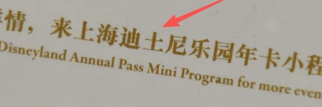
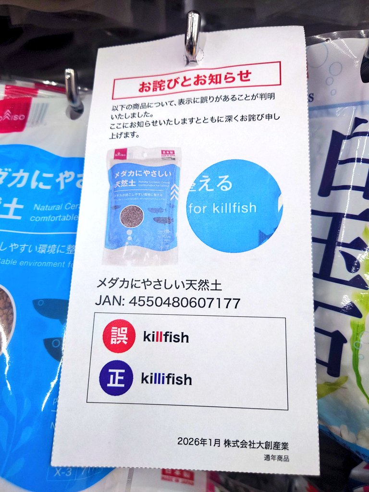
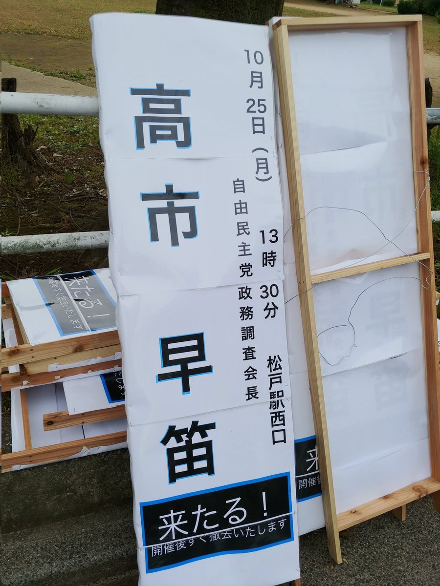
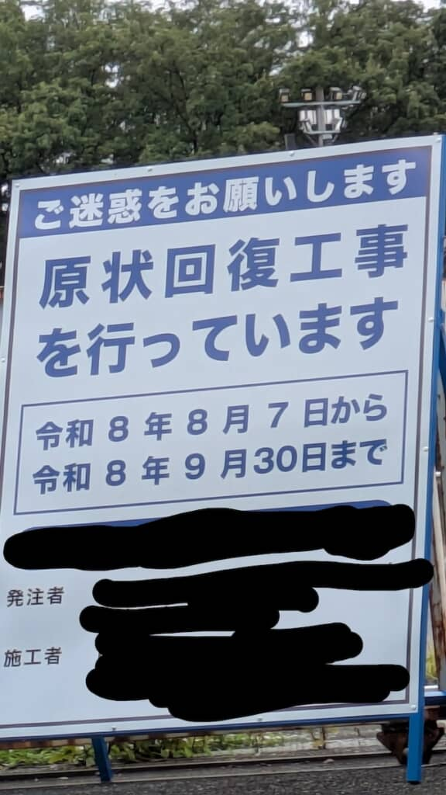

01 / 간판↗
01 / 간판↗
상대임 가지야
의도세로·우→좌→오독가로·좌→우
임야, 대지, 상가를 가로로 읽으면 '상대임 가지야'가 된다. 뜻이 통하지 않는 말의 나열이다.
읽는 방향이나 순서가 달라지면 같은 말이 전혀 다른 뜻이 된다.
01 / 간판↗
임야, 대지, 상가를 가로로 읽으면 '상대임 가지야'가 된다. 뜻이 통하지 않는 말의 나열이다.
 02 / 텍스트↗
02 / 텍스트↗
가난과 공부에 관한 글이 '사람을 먹는다, 사람을 먹는다'로 바뀐다.
 03 / 간판↗
03 / 간판↗
'탕'으로 끝나는 네 가지 탕이 나란히 서면 '탕탕탕탕'이 된다. 총소리 같다.
 04 / 간판↗
04 / 간판↗
'우동·소바'를 세로로 쓴 간판을 가로로 읽으면 '소도반'이 된다.
 05 / 포장↗
05 / 포장↗
'HD video converter'의 HD가 일본어 'エロ(야한)'처럼 보이면서 '야한 동영상 변환기'가 된다.
 06 / 간판↗
06 / 간판↗
'肉のこーべや'라는 정육점 간판을 거꾸로 읽으면 '야베에 코노 니쿠', 곧 '이 고기 위험한데'가 된다.

07 / 메뉴↗메뉴 항목의 끝 글자만 세로로 읽으면 '반반반…'이라는 리듬이 생긴다.
 08 / 간판↗
08 / 간판↗
옥상 전망대가 미끄럽다는 주의문이 세로로 읽으면 기묘한 시가 된다.
 09 / 간판↗
09 / 간판↗
'스고이 마쿠라(대단한 베개)'를 세로로 읽으면 '스마', '고쿠', '이라'라는 세 쌍이 된다.
 10 / 메뉴↗
10 / 메뉴↗
음료 메뉴가 세 줄로 놓였는데, 셋째 열을 세로로 읽으면 '코론(コロン)', 곧 '콜론'이 된다.
 11 / 간판↗
11 / 간판↗
'짐 리프트', '컨베이어', '투입 리프트'가 세로로 놓인 간판. 가로로 읽으면 가나만 '리베리', '후야후'로 나란히 읽힌다.
 12 / 간판↗
12 / 간판↗
네 가지 진료 항목이 왼쪽에서 오른쪽으로 놓였는데, 셋째 열만 세로로 읽으면 '수정아구(이를 고쳐라)'가 된다. 원래는 '아구호', 곧 이가 좋다는 뜻으로 입맛이 좋다는 말이다.
 13 / 배너↗
13 / 배너↗
오른쪽에서 왼쪽으로 읽으면 '다단계로 돈을 벌려 해도 삶에 출구는 없다'는 경고지만, 왼쪽에서 오른쪽으로 읽으면 '삶에 출구는 없다, 다단계로 돈을 벌자'는 권유가 된다.
 14 / 간판↗
14 / 간판↗
오른쪽에서 왼쪽으로 내려가며 놓인 패널을 읽으면 '모든 전차가 이나리역에 정차합니다'. 왼쪽에서 오른쪽으로 읽으면 '스마시 샤테이…'가 된다.
 15 / 간판↗
15 / 간판↗
패널 위에는 '예약', 아래에는 '접수 중'이 놓인다. 패널마다 위에서 아래로 읽으면 '고주요부쿠야쿠추'가 된다.
 16 / 포스터↗
16 / 포스터↗
포스터는 '인민은 당을 믿는다' 위에 '좋은 끝은 없다'를 놓았다. 한 문장으로 읽으면 '인민은 당을 믿으면 좋은 끝이 없다'가 된다.
 17 / 간판↗
17 / 간판↗
가게가 하려던 말은 '기술 없이 모두 솜씨'라는 뜻의 '没有科技，都是手艺'였다. 그런데 '기술'과 '솜씨'를 반대로 걸어 '솜씨 없이 모두 기술'이 되어 뜻이 뒤집혔다. 그래도 가게는 화제가 되었다.
 18 / 배너↗
18 / 배너↗
찻집의 '라멘' 현수막이 십여 년 전 뒤집혀 옆으로 걸렸다. 뒤에서 보면 거울에 비친 가나가 '루메소'가 되는데, 가게는 그대로 두었다.
 19 / 광고판↗
19 / 광고판↗
999감기약이 수험철에 광고판을 거꾸로 걸었다. 999 로고가 666이 되어, 수험생이 '잘 본다'는 뜻으로 쓰는 숫자가 되었다.
.jpg) 20 / 노렌↗
20 / 노렌↗
장어집 '오가와기쿠'의 노렌은 '우나기(장어)'를 오른쪽에서 왼쪽으로 새겼다. 왼쪽부터 읽으면 '기나우'가 된다.
 21 / 노렌↗
21 / 노렌↗
과자점 '도라야'는 노렌의 상호를 오른쪽에서 왼쪽으로 새겼다. 왼쪽부터 읽으면 '야라토'가 된다.
 22 / 간판↗
22 / 간판↗
꽃집 간판은 '하나'를 오른쪽에서 왼쪽으로 놓아 '나하'로 읽힌다. 위의 FLORIST는 평범하게 왼쪽에서 오른쪽이다.
 23 / 간판↗
23 / 간판↗
오래된 간판은 '야마키 산교 주식회사'를 오른쪽에서 왼쪽으로 새겼다. 왼쪽부터 읽으면 '사회식'으로 시작해 회사 이름이 거꾸로 흐른다.
 24 / 노렌↗
24 / 노렌↗
튀김집 노렌은 '덴푸라'를 오른쪽에서 왼쪽으로 새겼다. 왼쪽부터 읽으면 '라부텐'이 된다.
 25 / 메모↗
25 / 메모↗
안내문의 세로줄이 일본어 세로쓰기와 반대로 왼쪽에서 오른쪽으로 놓였다. 오른쪽에서 왼쪽으로 읽는 사람은 줄 순서가 뒤집혀 '유인 레지(직원이 있는 계산대)'가 '유진 레지(친구 계산대)'가 된다.
 26 / 간판↗
26 / 간판↗
풍화로 '숍퍼즈' 간판이 군데군데 떨어져 '뇨하-'만 남았다. 위 옥상 간판에는 아직 가게 이름이 있다.
 27 / 라벨↗
27 / 라벨↗
옛 라벨은 '특급고량주'를 오른쪽에서 왼쪽으로 새겼다. 왼쪽부터 읽으면 '주량고급특'이 된다. 진먼의 라벨은 1980년 무렵 방향을 바꾸었다.
 28 / 간판↗
28 / 간판↗
가게 이름은 '치카라 라멘(힘 라멘)'이다. 그런데 간판은 '力'을 'カ'로 그려 놓고 '치카라'는 작은 후리가나로 남겨, 지나가는 사람들에게 '카라멘(컬러 라멘)'으로 읽힌다.
 29 / 배너↗
29 / 배너↗
졸업 게시판은 '앞날도 찬란하다'는 뜻의 '前途亦灿灿'을 쓰려다 '烂烂(썩다)'로 인쇄했다. 졸업생들에게 썩은 미래를 빌어 준 셈이다.
 30 / 포스터↗
30 / 포스터↗
포스터는 '대박'이라는 뜻의 '夯爆了'를 쓰려다 '劣爆了(형편없다)'로 인쇄했다. 광고가 팔려는 아이스크림을 욕한 셈이다.
 31 / 간판↗
31 / 간판↗
주택가 정문 글자는 스텐실을 뒤집어 뿌려 '진추 샤오취'의 모든 획이 거울 글자가 되었다. 다시 칠할 때도 오류를 그대로 두어 이십 년째 남아 있다.
 32 / 간판↗
32 / 간판↗
'기타센주' 역명판을 새로 만들면서 '千'을 '干'으로 찍었다. 아래 후리가나는 여전히 '기타센주'다.
 33 / 간판↗
33 / 간판↗
Wi-Fi를 쓰려던 간판이 'wifeあります(아내 있습니다)'가 되었다. 충전 OK는 그대로다.
 34 / 간판↗
34 / 간판↗
장어집 '우나기노 마타이치'의 주차장 간판. 상호 '又一'이 가타카나 '누-'처럼 그려져 있다.
 35 / 간판↗
35 / 간판↗
미나미산리쿠 대피 안내판은 '스포츠 교류 마을'을 'Spouse Exchange Village'로 옮겼다. sports를 spouse(배우자)로 잘못 적었다.
 36 / 간판↗
36 / 간판↗
등산로 안내판은 '정상은 이쪽'이라고 말한다. 그 아래 기계 번역이 'Click here for the summit'이라, 산이 링크라도 된 듯하다.
 37 / 간판↗
37 / 간판↗
동물원은 조용히 보라고 안내한다. 중국어 '静静請看'은 '조용히 보세요'이지만 '징징(판다 이름)을 보세요'로도 읽혀, 부사가 판다 이름이 된다.
 38 / 게시판↗
38 / 게시판↗
출발 시각, 차량 수, 문 수를 늘어놓은 안내판. 8시 21분 열차의 문 수 칸이 'Sold Out'이다. '만석'을 옮긴 말인데, 열차가 만원이라는 뜻이지 매진이라는 뜻은 아니다.
 39 / 배너↗
39 / 배너↗
현수막에는 '점심 1000엔~'이라고 적혀 있다. 히라가나로 쓴 글자가 바람에 휘어 'ら'가 'う'처럼 보이면서 '응가'로 읽힌다.
 40 / 배너↗
40 / 배너↗
'야채 직판장' 현수막을 뒤집어 걸었다. 뒤에서 보면 거울 글자가 '이과 직판장'으로 읽힌다.
 41 / 배너↗
41 / 배너↗
같은 방식으로 뒤집힌 현수막. '어서 오세요'라는 'いらっしゃいませ'가 'りさっしゃいまサ'로 돌아온다.
 42 / 배너↗
42 / 배너↗
'샤모 냄비(투계 닭고기 전골)' 현수막을 뒤집었더니 거울 글자가 '샤치 냄비(범고래 전골)'가 되었다.
 43 / 배너↗
43 / 배너↗
'본초친(제등)' 현수막을 뒤에서 읽으면 '盆髪城'이 된다. 백중을 위한 머리 성이다.
 44 / 배너↗
44 / 배너↗
옥수수 현수막을 뒤에서 읽으면 '우소마사코시'가 된다. 첫머리가 '거짓말'이다.
 45 / 배너↗
45 / 배너↗
노래방 현수막을 뒤집었다. 브랜드 'DAM'이 'MAD'가 되었다.
 46 / 배너↗
46 / 배너↗
고치의 '료마의 휴일' 현수막을 뒤에서 보면 거울 글자가 '류마의 촌일(마을의 날)'이 된다. 휴일이 마을의 날이 되었다.
 47 / 간판↗
47 / 간판↗
조명 간판은 '徽乡宴府', 아래 나무 현판은 '微乡宴府'로 '徽'의 윗부분이 빠졌다. 가게는 이 오류가 의도한 것이라고 말한다.
 48 / 배너↗
48 / 배너↗
추석 현수막은 소식의 '천리공선연'을 인용한다. 간체를 번체로 바꾸며 교정하지 않아 '里'가 '裡(안)'가 되었다.
 49 / 간판↗
49 / 간판↗
우장의 가게는 해당화 모양 떡 '海棠糕'를 판다. 간판은 '棠'을 '堂'으로 썼고, 주민들은 실수인지 마케팅인지 두고 이야기한다.
 50 / 간판↗
50 / 간판↗
홍콩의 임시 도로 표지판은 디즈니를 'Disncy', 퉁충을 'Tung Chun'으로 잘못 적었다.
 51 / 간판↗
51 / 간판↗
상하이의 새 지하철역은 '후마루'를 'Human Road'로 표기했다. 입력기가 단어를 마저 완성한 탓이다. '푸진루'도 'Fujin Poad'가 되었다.
 52 / 간판↗
52 / 간판↗
공원이 금지한 것은 '炸鱼', 곧 폭약으로 물고기를 잡는 일이다. 번역은 '炸'를 '튀기다'로 보고 'No Fried Fish', 튀긴 생선을 금지했다.
 53 / 메뉴↗
53 / 메뉴↗
야우마테이의 차찬탱은 메뉴를 소리 나는 대로 쓴다. '黑椒雞扒飯(흑초 닭다리살 덮밥)'이 '克召雞扒反'이 되었다. 광둥어로 소리 내어 읽어야 알아볼 수 있다.
 54 / 간판↗
54 / 간판↗
배표 안내판은 '핵재 12인', 곧 정원 12명을 뜻한다. 영어는 'nuclear loading'으로 옮겨, 배가 원자로로 달리는 듯해졌다.
 55 / 간판↗
55 / 간판↗
자오위 옛 마을 화장실 입구에는 '머리를 조심하라'는 '小心碰头'가 있다. 영어는 이를 그대로 옮겨 'Carefully Meet'이 되었다.
 56 / 간판↗
56 / 간판↗
쑤저우의 가로등 표지판은 '핑장루'에 옆 정원 '스쯔린'의 영어 이름을 붙였다. 그것도 'THE LION FOREST GARD'로 줄여 썼다.
 57 / 간판↗
57 / 간판↗
타일에는 '바닥이 미끄럽다'는 '小心地滑'이 적혀 있다. 글자 그대로 읽으면 '地'가 부사가 되어 '조심히 미끄러지세요'가 된다.
 58 / 메뉴↗
58 / 메뉴↗
카페 칠판에는 '호트독'이라고 적혀 있다. '호트도그(핫도그)'에서 가나 하나가 빠졌고, 그 아래에는 'Hot topic'이 있다. 핫도그도 화제도 아니다.
 59 / 라벨↗
59 / 라벨↗
뷔페 카드는 '간모 조림'이라고 적혀 있다. 영어는 'Boiled cancer'로 옮겨, '간'을 암으로 본 셈이다.
 60 / 간판↗
60 / 간판↗
시안-청두 열차 화장실은 다른 '动车(전동차)'와 교행할 때 물을 내리지 말라고 한다. 영어는 이를 'EMU'로 줄여, '에뮤라는 새를 만날 때 물을 내리지 마라'가 되었다.
 61 / 간판↗
61 / 간판↗
표지판은 운전자에게 이 길을 '문명', 곧 예의 바르게 지나라고 한다. 영어는 'SET UP THE CIVILIZATION PASSAGE'가 되어 문명 통로를 설치하라는 명령이 되었다.
.jpg) 62 / 간판↗
62 / 간판↗
마트는 '무설탕 식품 전용 선반'에 'There be no candy food'라고 붙였다. 선반 이름이 '사탕이 없다'는 문장이 되었다.
 63 / 간판↗
63 / 간판↗
상하이 페리 승강장에서 '배와 부두의 높이 차이를 조심하라'는 '注意高低空档'이 'NOTE THAT THE LEVEL OF GAP'이라는 메모가 되었다.
 64 / 간판↗
64 / 간판↗
톈티산 석굴의 표지판은 '기어오르지 마라'는 '请勿攀爬'다. 영어는 m을 겹치고 b를 끼워 넣어 'No climmbing'이 되었다.
 65 / 광고판↗
65 / 광고판↗
타오위안의 캠페인 광고판은 나이키의 문구를 빌려 왔지만 마지막 두 글자를 뒤집어 'JUST DO TI'로 인쇄했다.
 66 / 간판↗
66 / 간판↗
JR 니시후나바시역 안내판은 '신주쿠'를 'Shijuku'로 적었다. n이 하나 빠졌다. 수정은 빠진 글자 위에 흰 스티커를 붙이는 것으로 끝났다.
 67 / 라벨↗
67 / 라벨↗
스티커에는 '￥'가 찍혀 있다. 뒤집으면 그 획이 '夫(남편)'로 읽혀, 가게가 남편을 한 장씩 파는 것처럼 된다.
 68 / 광고판↗
68 / 광고판↗
쯔보의 광고판은 '미성년자를 돌보자'는 '关爱未成年人'에서 '未'를 빠뜨렸다. 시민에게 성인을 보호하자는 구호가 되었다.
 69 / 간판↗
69 / 간판↗
'출구 374' 표지판은 '허베이'와 '난징'을 한 줄씩 적었다. 세로로 읽으면 네 글자가 '허난'과 '베이징'이 된다. 이 사진은 편집된 것이며 원래 표지판은 알 수 없다.
 70 / 게시물↗
70 / 게시물↗
고치의 카드 가게가 우승자를 '쿠소헤타 괴인 이시가미'라고 축하했다. 원래 닉네임은 '쿠세헤타'인데 세와 소를 바꿔 써서 게임을 못한다고 말한 셈이 되었다.
 71 / 봉투↗
71 / 봉투↗
차 체인의 봉투 씰에는 '打包在忙，吸管别忘(포장이 바빠도 빨대를 잊지 마세요)'가 적혀 있다. '再(아무리 바빠도)'가 필요한 자리에 '在'가 들어가, 당부가 현황 보고가 되었다.
Nowwa Coffee의 라이트박스는 홍보대사 이름 자리에 '帅气青年男性(잘생긴 청년 남성)'을 적었다.

73 / 메뉴↗상하이의 양고기 식당은 1인분을 '19元(客)'으로 매겼다. '客'을 '克'으로 잘못 입력해 '19元(克)'이 되었다. 1그램에 19위안, 1근이면 9,500위안이다.

74 / 패스↗상하이 디즈니의 연간권 책자는 '迪士尼'를 '迪土尼'로 인쇄했다. '士'가 '土'가 되어 공원 이름에 '투'가 붙었다.

75 / 안내↗다이소의 메다카용 흙은 'killifish(송사리)'에게 쾌적한 환경을 약속했지만, i 하나가 빠져 'killfish'가 되면서 물고기를 죽이는 흙이 되었다.
Luckin Coffee 헬로키티 참의 세탁 라벨이 HELLO를 HEELO로 인쇄했다. E 하나가 더 붙어 인사말이 온라인에서 '喝喽(마셔라)'가 되었다.

77 / 간판↗마쓰도역 앞 지지자의 손팻말이 '다카이치 사나에(高市早苗)'를 '다카이치 하야부에(高市早笛)'로 적었다. '苗'가 '笛'로 바뀌어 후보자가 피리가 되었다.

78 / 간판↗공사 안내판이 'ご迷惑をおかけします(불편을 끼칩니다)'와 'ご協力をお願いします(협조를 부탁드립니다)'를 섞어 'ご迷惑をお願いします(불편을 부탁드립니다)'로 만들었다. 폐를 끼쳐 달라고 부탁하는 셈이다.
항목이 없습니다. 검색어나 필터를 바꿔 보세요.